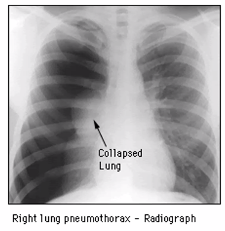

Shock og væske behandling
Start: 17-06-2020 08:15
Dan siger godmorgen.
- Nej ikke i dag.. øv.
- Mikkel: Sider t.v.: Invasiv radiologi..
- Thomas: t.h, overlæge på anæstesi på Køge
Thomas og Mikkel siger godmorgen
- 08.00-09.00: Intro / Septisk- & Anafylaktisk Shock [TB]
- 09.15-10.00: Kardiogent shock [MS]
- 10.15-11.00: Obstruktiv shock LE & PE [MS]
- 11.15-12.00: Trykpneumothorax / Hypovolæmisk- & Neurogent-shock [TB]
Shock
- De siger der er 5 udgaver
- med neurogent shock.. hmm.
Præsentation af shock
- Hvordan spotter man det?
- BT?
- Kan ikke stå alene
- Puls
- Lav, høj, normal
- Kan ikke stå alene
- Lav, høj, normal
- Metabolisk acidose
- Acidose hvis dårligt perfunderet, anaerob metabolisme > laktat
- God prædiktiv værdi af høj laktat.
- Urinoutput
- Vil være lavt,
- godt mål.
- Intet output => så skal man være nervøs
- Klinisk: takypnø, dyspnø
- Forpustet når de ligger stille
- Kan også være andet: pneumoni, astma, ...
- Thomas har STORT SET IKKE set en dårlig patient som ikke var takypnø
- Mikkel: Det er en give-away når I tager fat i dørhåndtaget
- Klinik: Kold og klam svedende, marmorering
- Marmorering t.v.; T.H: Misfarvning - det kunne være DIC
- Kapillærrespons: Holder trykket 3-4 sek - hvornår normalt igen.
- <2 sek: fint
- forlænget: kedeligt tegn
- Udtryk for dårlig perfusion
- Cerebral tilstand
- (billede fra "Ondskabens Hotel - all work no play - the shining")
- BT?
Sepsis
Ovenstående er SOFA-score
qSOFA
Der skal være mistanke om infektion, ikke alkohol eller traume
Septisk shock
- Sepsis med
- Brug for vasopresser for at holde MAP > 65.
- OG
- Laktat > 2 mmol/L
Tilgang og tidsforløb
- Man skal tænke tidsforløb ind. Udvikling. 17-06-2020 08:31
- Noget skal gøres indenfor 5 min, indenfor 30 min, osv.
- Sepsis er akut - der skal gøres noget
- De første 5 minutter
- ABCDE
- De første 30 minutter
- Antibiotika - fx ampi/genta el. pip/tazo eller mod fokus.
- Er AFGØRENDE for prognosen
- Såvidt muligt dyrkninger før, så AB kan rettes til.
- Væske (noget med 30 ml / kg første 3 timer)
- I gamle dage skulle de have massere, men ikke nutildags.
- Antibiotika - fx ampi/genta el. pip/tazo eller mod fokus.
- De første 3-4 timer
- Vigtigt at se effekten af behandling
- Hvis ikke bedring, da involveres INTENSIV.
Dehydreret vs. hypovolæmi?
17-06-2020 08:33
- Starte med at være dehydreret til senere at være hypovolæmisk
- Løs snak omkring væske..
- Nu skal man ikke bare pøse væske på. Nyt paradigme. Væske
- Væske er et lægemiddel!
- 17-06-2020 08:35
Case 1
- 57-årig kvinde indlægges via Vagtlæge med vejrtrækningsbesvær gennem 3 dage og feber
- CO-morbiditet
- DM2
- hypertension
- depression
- fibromyalgi
- astma
- Supplerende anamnese:
- Anuri gennem ca 1 døgn.
- Har hostet ca 1 uge forud for.
- Ingen udlandsrejse.
- Ingen binyrebarkhormon seneste 6 mdr.
- Før corona!
- ABCDE
- A: Snorkende vejrtrækning med lettere obstruktion
- Kæbeløft, nasal airway => fin vejrtrækning
- B: RF 35, besværet vejrtrækning, SAT 89% u O2. St.p: forlænget expir, udtalt krepitation basalt bilat
- C: Puls 120 uregelmæssig, BT 75/45, St.c: påskyndet HA != PP
- HA = Heart action? Hjerte aktion
- D: V-P (AVPU), sløret cerebralt, ikke orienteret
- E: Tp 39.1, grå gusten kulør, kølig fra anklerne og distalt
- A: Snorkende vejrtrækning med lettere obstruktion
- BREAKOUT:
- Hvilke diagnostiske overvejelser gør du dig?
- qSOFA: 3 ud af 3 + temp forhøjelse.
- Shock / septisk?
- obs. AFLI
- Og hvilke tiltag vil du sætte i værk?
- A:
- Nasal airways (grisetryne i sygepleje-sjagon), kæbeløft
- B:
- CombiVent, ilt
- Ilt til 95%
- C:
- IV-adgange, EKG.
- A-gas m. BS?
- Væske: 500 ml NaCl isoton.
- Bekymring: Kardiogent shock ville forværres!
- Lejring: Hjælper trendelenburg?
- Kan være et hint om hvorvidt væsketerapi virker.
- D:
- NRS, BS (DM2! fås fra A-gas)
- E:
- Fokus:
- venyler,
- lumbalpunktur,
- urinundersøgelse,
- trakelsugning.
- rtg
- KAD
- Empirisk AB inden for 30 min.
- Fokus:
- A:
- Hvilke diagnostiske overvejelser gør du dig?
- A-gas
- pH 7,13
- pO2 6,9
- pCO2 12
- BE -16,8
- HCO3 11,4
- Laktat 5
- Natrium 136
- Kalium 5,9
- Hb 7,6
- BS 9,6
- Differential diagnoser til septisk shock
- Hypovolæmi?
- Dehydreret?
- Sepsis?
- Septisk shock?
- KOL in ex?
- Pneumoni?
- Missed STEMI?
- Andet?
Diagnostisk og behandling
- Dyrkninger (blod, urin, TS, Lumbal pkt)
- Fokus (Rtg af thorax, Urin stix, podning, UL/EKKO, GU)
- Biokemi
- AB (kendt vs. ukendt fokus)
- Revurdering — revurdering — revurdering !!!
- Det kan ikke siges nok.
- Evt ITA?
- Kontakt intensiv afdeling hvis:
- Hvis patientens kliniske tilstand forværres
- Ved faldende PaO2 og/eller saturation.
- Ved faldende pH og/eller stigende laktat.
- Hvis effekt mål ikke er nået indenfor de første 2 til 4 timer.
Take home - Septisk shock
- Ved sepsis-tilstande (specielt shock) er tiden en meget vigtig
- faktor for prognosen
- Tidlig målrettet indsats gør en forskel
- Kredsløbsterapi er understøttende
- Tidlig specifik terapi (antibiotika) er essentielt
Resuscitation / væskebehandling
- Kardiogent shock 17-06-2020 08:45
- Hvis de begynder at hive endnu mere efter verjet efter 500 ml mobiliseret fra benene, så tænk kardiogent.
- Kan de sove fladt?
Slut på 1. time
Spørgsmål - start 2. time
17-06-2020 09:16 hov glemte tiden, så mangler første 2 min
- Spørgsmål om beta-agonist fra chatten: OM det er problematisk at give?
- Ja, det er fint. bare giv det også. Giver minimal påvirkning af hjertefrekvens.
Kardiogent shock
Case 1
- 56 årig mand kendt med:
- Hypertension, ikke velreguleret på 2-stof behandling
- Hyperkolestrolæmi
- Ex-ryger
- Aktuelt:
- Debut af brystsmerter for 3 dage siden.
- Brystsmerter faldet til ro men fortsat murren i brystet især om natten. Forværres af let anstrengelse, ledsaget af funktionsdyspnoe, NYHA3
- Indbringes til akutmodtgelsen, du har kardiologisk forvagt
ABCDE
- A: Fri
- B: Ingen hviledyspnoe, RF 22, SpO2: 93% uden ilt, ingen stase
- ingen stase: kan ikke høre stase
- C: BT: 160/105, puls 94, varm og tør, ingen mislyde
- D: Vågen, relevant, ingen neurologiske udfald
- E: Perifer varm
- Fortolkning: Stabil pt fraset anamnese
EKG
- EKG: Frekvens 50, P-takker før hvert QRS
- højresidigt grenblok?
- STEMI.
- højresidigt koronarkar?
- bræk (forkvalmet)
- bradykardi (har denne)
- blok (3.rd AV-blok - har denne pt ikke) [TODO: Eller er blok = grenblok?]
- Hvad gør du som det næste? [POLL]
- Konferere EKG med kardiologisk bagvagt på Rigshospitalet
- Det skal altid konfereres, og de vil informere om AKS-behandling.
- Konferere patient med bagvagt (bl.a. mhp. ekkokardiografi)
- Opstarter AKS behandling
- A punktur
- Rtg thorax
- Blodprøver inkl. troponiner
- Konferere EKG med kardiologisk bagvagt på Rigshospitalet
- Første undersøgelser
- pH 7,44. pO2 10,2 (10 liter ilt) pCO2 4,8
- BE—1 HCO3 24 Laktat 1,2
- EKKO: Inferior hypo/akinesi. LVEF 40%
- Rtg Thorax: ia
- TNI: 17.900
- KAG næste dag
- Da pt ikke havde akutte brystsmerter, og smertedebut 3 dage forinden, derfor missed STEMI, så vurd. at det ikke skulle flyttes akut
- subakut KAG
- Efterfølgende
- Fortsat murren i brystet efter PCI — observeres på afdelingen
- 2 dage senere bliver pt. akut dårlig, udtalt dyspnoe, bleg og klam
- Der laves ABCDE:
- A: Fri
- B: Læbecyanose, hviledyspnoe, RF 32, SpO2: 88% uden ilt, bilat stase
- C: BT: 85/50, puls 124, kølig og fugtig hud. Systolisk mislyd ved apex
- D: Vågen, urolig men relevant, ingen neurologiske udfald
- E: Perifer kølig
- Diskutér alle tiltag du kan foretage akut på stuen [17-06-2020 09:35]
- ilt på maske, rigeligt
- lejring, sætte op.
- A-pkt
- Rtg thorax.
- Lidt morfin? [kan du godt give, problemet: respiratorisk udfordret i forvejen, ville give noget med lav halveringstid på ITA/anæstesi.]
- nitroglycerin [hold jer fra dette her pga lave BT.]
- furix? [Der var noget snak om dette, 17-06-2020 09:39]
- Hvad mistænker du patienten fejler og hvad gør du?
- Kardiogent shock, klapinsufficiens. Mitralklapsinsufficiens.
- Lungeemboli?
- Ekkokardiografi? Papilmuskelruptur?
- Missed STEMI => tænk altid mekaniske et-eller-andet 17-06-2020 09:38
- Tiltag på stuen - facits 17-06-2020 09:39
- Vurdér lejring (Fladt? Eleveret rygleje? Trendelenburg?)
- 15 liter ilt
- Få hjælp, MAT mhp stabilisering og overflytning til ITA
- Sikre 2 velfungerende PVK
- Ny A-punktur
- Ved tvivl: væskebolus på 250-500 ml / få minutter, vurdér respons
- Anamnesen her gør at væskebolus kan fravælges.
- Nyt EKG
- Akut ekkokardiografi
- Akut rtg thorax på stuen
- KAD
- Svar på tiltag
- EKG: Sinustakykardi
- Ingen nye iskæmitegn
- pH 7,32
- pO2 8,8 (15 liter ilt)
- pCO2 4,8
- BE -1
- HCO3 24
- Laktat 2,2
- SpO2 94%
- (TNI 938 / D-dimer 1,2)
- EKG: Sinustakykardi
- ITA efterforløb
- Intuberes (tærsklen for respiratorbehandling ved kardiogen shock er lav, da respirationsarbejdet er stort, op til 25% af samlet 02 forbrug).
- Man kan spare meget Cardiac output ved inbubation
- Invasiv monitorering med CVK og A-kanyle
- Inotropi / Vasopressor (evt. mekanisk cirkulationsstøtte)
- EKSAMEN: to koncepter 17-06-2020 09:46
- Inotropi: Hjertets sammentrækningsevne
- Vasopressor: Trækker kar sammen (noradrenalin), centrer
- Kan skabe iskæmi i ekstremiteter ved længere brug.
- EKSAMEN: to koncepter 17-06-2020 09:46
- Diuretika / Dialyse
- Intuberes (tærsklen for respiratorbehandling ved kardiogen shock er lav, da respirationsarbejdet er stort, op til 25% af samlet 02 forbrug).
Kardiogent shock
diagnostiske kriterier
- Primær kardiel dysfunktion
- Systolisk BP <90 mm Hg
- Organ hypoperfusion
- (oliguri, sløret sensorium, Laktat >2,5 / SVO2 <55%)
- Laktat > 2,5 ikke oblikat kriterium.
- Sympaticus stimulation (sinus takykardi)
17-06-2020 09:47
Årsager
- Akut myokardie infarkt STEMI / NSTEMI
- Akut klapinsufficiens
- Akut mitral insufficiens (f.eks. Papillærmuskel ruptur efter AMI)
- Akut forværring af kronisk hjertesvigt
- Takyartymi med taky-kardiomyopati
- Myocarditis
17-06-2020 09:49
Cardiac output
17-06-2020 09:50 snak om at årsager enten er SV eller HR.. HR nedsat fx 3gr blok eller anden rytme forstyrrelse.
Vurd af PERFUSION og VOLUMEN
17-06-2020 09:51
- Flankeødemer på liggende!
Kold/Varm vs Tør/Våd - Vigtigt slide
Inddel sygedom til billede
- Kardiogent shock
- Kold og våd - Class 4
- Isoleret akut højre ventrikelsvigt
- Kold og tør - Class 3.
- Der kommer ikke blod i lunger, derfor er de tørre, der kommer ikke blod fra lunger til venstre hjerte., derfor kold.
- Den lungemæssige vådhed ..
- Våd i ben, ascites, HVS, men IKKE pulmonal stase
- Så er der twist med backward-failure, så kan det også blive vådt.
- Kold og tør - Class 3.
- Hypertensivt lungeødem
- Varm og våd - Class 2
- Stabil hjertesvigt
- Varm og tør - Class 1
- Furix på stuen - hvilke?
- Class 2 - JA NATURLIGVIS. De skal af med vand.
- Class 4 i fulminant shock
- Så skal man vente med furix før man har anæstesiolog ved sidne
- De vil typisk opsætte furix infusion på ITA med inotropisøtte.
- De kan monitorere Beat-to-beat
- og en masse andet fancy-ITA-snak.
- Så skal man vente med furix før man har anæstesiolog ved sidne
Slut på 2. time
Obstruktivt shock.
Case 2 ?
- 61 årig mand kendt med
- DM2 (Glimepirid, har i 2010 haft diabetisk ketoacidose),
- kronisk stabil skizofreniform psykose (behandling med Sulpirid og Truxal).
- Går ikke særlig tit til læge.
- Stor tobaksanamnese (Pakker/dag: 2 / År: 40 / Pakkeår: 80).
- Alkoholoverforbrug
- Aktuelt
- tiltagende forpustet gennem flere uger, svært at ligge ned, søgte ikke e.l., vil "selv klare det". Ved ankomst hviledyspnøisk.
- Indlægges via 1813 grundet vejrtrækningsbesvær med forværring i dag.
- Du er forvagt og tilkades akut pga. rød triageret patient
- Umiddelbart indtryk:
- Vågen, klar, orienteret i tid, sted og egne data.
- Urolig. Angst. gusten, svedende, perifer kold. Takypnøisk. Akut påvirket. Kronisk medtaget. Fremstår ikke smertepåvirket, ej psykotisk.
- A: Frie luftveje
- B: Hviledyspnoe, RF 25, SpO2: 90% uden ilt, ingen pulmonal stase
- C: BT: 80/50, puls 130-150, perifer kølig, svækkede hjertelyde, ingen mislyde, kapillær respons >2s, halsvenestase
- D: Vågen og relevant, angst, ingen neurologiske udfald
- E: afebril, opdrevet abdomen, deklive ødemer
- BREAKOUT: HVad kunne denne patient fejle?
- Ikke våd. Umiddelbart ikke tegn til ve. sidigt sivgt.
- 17-06-2020 10:23
- Svækkede hjertelyde?
- Lungeemboli, hjertetamponade, perikarditis
- Skal der mere vand på vand?
- Det er ikke intravasalt!
- Ved at give væske her, giver man preload til RV.
- Undervisere ville give væske til denne, 500 ml til hurtigt indløb. *
- EKG:
- Low-voltage?
- Bravo: [TODO: Hvad er definition af dette?]
- Regelmæssigt - men P-takker skjult pga støj.
- AFLA? Er den savtakket nok!?. DAN BRYDER IND. GÅ LIGE IND OG TJEK.
- Takykardi: frekvens 150
- Støj nok
- QRS alternans.
- Hængekøje hvis man leder efter det.
- Ændret belastning?
- Low-voltage?
Poll: Blandt nedenstående differential diagnoser til obstruktivt shock, hvilken er den mest sandsynlige årsag?
17-06-2020 10:32
- Lungeemboli
- Tamponade (Perikardie eksudat)
- Perikardie eksudat ses f.eks. ved perikardit / consrictio cordis / malignitet (obs lungecancer) / instrumentering)
- Pneumothorax
- Højresidigt myokardie infarkt
- Restriktiv kardiomyopati
- Pulmonal hypertension (f.eks. svær KOL)
Kliniske fund ved tamponade
- Takykardi (pga. faldende minutvolumen og tryk)
- Takypnø
- Halsvenestase
- Hepatomegali (evt.)
- Hypotension (kold og klam hud, nedsat eller ophævet diurese)
- Påvirket sensorium, stuporøs eller agiteret
- Pulsus paradoxus: reduceret systolisk blodtryk på >10 mmHg under inspiration, svagere puls under inspiration
- Svage hjertelyde, perikardiel gnidningslyd høres sjældent
- Lungestetoskopi er oftest upåfaldende
- EKG viser sinus takykardi og evt. med low QRS voltage og QRS alternans
Der er en video med UL af "swinging heart": 17-06-2020 10:34. Man kan forestille sig hvorfor der er QRS alternans.
POLL: Akut behandling til obs shock
- Patient er shockeret, overhydreret og ødematøs og tåler ikke væske
- FORKERT (11%)
- Denne patient har akut preload problem og SKAL HAVE VÆSKE. OGSÅ MERE NED 500 ml.
- Patienten skal have preload optimering med 2 iv adgange og væske bolus test 500 mL (Vurdér BT respons)
- KORREKT
- Trendelenburg lejring (Vurdér BT respons)
- KORREKT (31% siger ja.)
- I skal huske: Denne pt har ikke væske på lungerene. HAr massere væske i ben og abdomen, dvs I må GERNE forsøge at lejre i trendelenburg.
- Patient skal have eleveret rygleje (til bedring af SAT)
- FORKERT. 26% siger JA. Imodsætning 17-06-2020 10:40
- Det kan ikke anbefales.
- Patienten skal have foretaget akut perikardiocentese
- KORREKT
- Overvej pacing (ved bradykardi) til ca. 100 bpm til optimering af CO (cardiac output)
- KORREKT. Generelt er det sand. Ikke relevant i denne case dog.
- Dette kan man gøre. Slagvolumen er svært nedsat, så øget
- Sinusknude og AV-knuden kan have hypoxi pga nedsat CO, og derfor kan extern paceing have en effekt. 17-06-2020 10:42
- Ekternspacing i en snæver vending, ja, det kan gå.
- Sufficient oxygenering for at undgå pulmonal hypoxisk vasokonstriktion
- KORREKT. Absolut ja.
- Kan ved hypoxisk vasokonstriktion i lungerne som øger trykket.. og RV svigt.
- Pausér pulssænkende og BT sænkende medicin
- KORREKT
Spørgsmål
- 17-06-2020 10:45 Kirstine spørger om noget.. fik ikke fat i hvad noget med traumatisk tamponade. Lige så snart de tappede 50ml ud så var der god, så det fyldte sig op igen. Det er ikke nok ikke KBU fis.
Case 3
- 43 årig mand med homozygot Faktor 5 Leiden mutation
- Note: homozygot mere udtalt end heterozygot mht koagulationsdefekt. [17-06-2020 10:49]
- Erhvervsaktiv. Ingen komorbiditet. For 2 uger siden forstuvet venstre ankel.
- For 8 dage siden ømhed af venstre lægmuskel
- For 2 dage pludselig åndenød ifm. præsentation på arbejdet og siden tiltagende dyspnø og trykken i brystet.
- Pt får nu dyspnø ved mindste fysiske aktivitet
ABCDE
- A: Frie luftveje
- B: Hviledyspnoe, RF 25, SpO2: 90% uden ilt, ingen pulmonal stase
- C: BT: 84/40, puls 110, perifer kølig, ingen mislyde, kapillær respons >2s, halsvenestase
- D: Vågen og relevant, urolig, ingen neurologiske udfald
- E: afebril, ingen deklive ødemer
ABG
- ABG:
- pH 7,48
- pO2 7,4
- pCO2 3,7
- BE -3
- HCO3 23
- Laktat 2,1
- sO2 0,91
- Kort snak: 17-06-2020 10:56
EKG
- EKG-fortolkning.
- Regelmæssig sinusrytme - ca. HR 100.
- ST - ej iskæmi.
- S1Q3T3
- S1 - ja.
- Q3 - ja
- T3 - bob, den er flad. For Mikkel er det godt nok at den er flad, måske endda bifasisk(?)
Break-in-room
- Mistænker lungeemboli
- S1Q3T3
- Dyspnø
- Faktor 5 leiden
- immobiliseret
- Ømhed af venstre lægmuskel.
Efter pt er kommet tilbage fra CT bliver han pludselig tiltagende alment påvirket.
- ABCDE revurdering
- A: Frie luftveje
- B: Hviledyspnoe, RF 25, SpO2: 80% med ilt, ingen pulmonal stase
- C: BT: 80/50, puls 120-130, perifer kølig og svedende
- D: bevidsthedspåvirket
- E: afebril, ingen deklive ødemer
POLL - Hvilke udsagn er rigtige.
- Patient er præ-shockeret og skal opstartes i AK behandling
- FORKERT:
- første: Fuldminant shock. Præshockeret er underdrivelse
- andet: AK-behandling er ikke helt rigtigt her 17-06-2020 11:01
- Hvis mindre påvirket patient, så bruger man AK-behnadling, men det gør akut trombolyse "forplumret"
- FORKERT:
- Patienten er shockeret pga akut højre sidigt hjertesvigt
- KORREKT:
- I skal tænke: 17-06-2020 11:01
- KORREKT:
- Patienten skal have preload optimering med 2 iv adgange og væske
- KORREKT: Ja tak.
- Patienten tåler ikke væske fordi han har akut venstresidigt hjertesvigt
- HELT FORKERT: 1. LV har det nok fint - det er RV der er belastet. 2. Øget preload er godt RV.
- Patienten skal opstartes i behandling med blodpladehæmmere
- FORKERT: Den vil gøre videre behandling besvær. Hvis man giver pladehæmmer, så bliver akut trombolyse forplumret.
- Patienten skal have foretaget akut trombolyse
- KORREKT
Behandling ved Lungeemboli OG SHOCK (akut trombolyse)
- Akut trombolyse og ufraktioneret heparin opstartes samtidig.
- Trombolysebehandling ved LE op til 14 dage fra symptomdebut
- Behandlingen bør opstartes hurtigst muligt, når diagnosen er stillet.
- Ved manglende effekt af trombolyse bør patient konfereres med center mhp. overflytning og mulighed for embolektomi.
17-06-2020 11:06 der noget snak om og spørgsmål.. center hjælp.
Slut på 3. time 17-06-2020 11:07
Anafylaktisk shock
17-06-2020 11:15
- Sidste 4 elementer af shock
- hypo
- Trykpneumothorax
- neurogent shock
- vi springer igennem det. vi må se om vi hodler tiden
- alp d huez. OPad
Case: ALARM 112: 42-årig mand med vejrtrækningsbesvær på fodboldbane.
- A: Hæshed
- B: RF 40, besværet stridorøs vejrtrækning — udtalt grad, SAT 90% uden 02, egalt luftskifte
- C: Puls hurtig > 100 måske 130, regelmæssig. Palpatorisk BT ikke følbar
- D: A (AVPU), udtalt døds-angst
- E: ia.
- Supplerende anamnese:
- Pt begynder efter 45 min's fodbold i småregn, pludseligt at klage over vejrtrækningsbesvær og hæver omkring mund og øjne, og har fråde om munden. Patient løftes til båren og begynder at krampe. Stukket af bi 10min før.
- Medicin: ingen
Starte 02 15L på HM og give i.m. adrenalin?
Casen gives away
17-06-2020 11:20 * Bliver kørt på ITA. Kramper * hypoperfusion af hjernen. * start med im adrenalin og så symptombehandling * tidl. intubation * men det var heldigvis Akut-mikkel der klarede den.
Anafylaktisk shock - teori
- Svær allergiske reaktion -> massiv vasodilatation -> kredsløbssvigt
- Potentielt livstruende tilstand
- Hyppigst in-hospital
- 150 tilfælde udenfor hospital/år
- Årsager: Bistik og penicillinallergi
- DOSIS AF ADRENALIN ULTRAVIGTIGT.
- 0,3 mg i.m. / 0,5 mg im er heller ikke forkert.
- 1 mg vil være lidt meget til at starte med. Kan man nå med 2x 0,5 mg.
- (ikke noget med at putte det I.V. - det må anæstesien om)
Behandling
- Adrenaline is the treatment of choice !!
- i.m. straks
- Voksne og børn over 12 år: 0.5 mg i.m. - evt. brug epipen (0,3 mg)
- Børn 6-12 år: 0,3 mg
- Børn < 6 år: 0,15 mg i.m.
- Ved manglende bedring, eller ved forværring af symptomerne, kan ny dosis gives efter 5 minutter
- Intravenøst adrenalin titreret bør kun gives af erfarne specialister under tæt monitorering
- ABCDE
Adjuverende behandling
- Antihistamin (Clemastin, Tavegyl)
- Voksne og børn over 12 år : 1-2 mg (2 ml) i.m. eller i.v.
- Steroid (Hydrocortison,Solumedrol)
- Voksne og børn over 12 år: 200 mg i.m. eller langsomt i.v. (> 30 sek)
- Beta-2 agonist inhalation (eller 0,25 mg i.v.)
- Fjern udløsende agens (om muligt) for at hindre yderligere eksponering for allergen
- Efterbehandling i mindst 3 døgn med antihistaminer og glukokortikoider
Opfølgning
- Alle med generelle symptomer på anafylaksi skal observeres i 24 timer
- Tryptase måling
- Maksimal serumværdi kan påvises ca. en time efter symptomdebut
- Udred patienten for allergi (efter straksreaktionen er behandlet)
- Specifik IgE i serum
- Priktest (mere sensitiv)
- Overvej Epi-pen
17-06-2020 11:25
Tryk pneumothorax
Case 72 år kvinde.
- 72-årig kvinde, kendt med KOL. Indbringes med Ambulance og AKUT kald pga sløvhed og vejrtrækningsbesvær
- A: meget besværet tale, hiver efter vejret
- B: RF 48, SAT 83% på HM(hudson?) 15L, nedsat luftskifte på højre side, rungende perkussion hø side
- C: BT 78/39, p 133 uregelmæssig, halsvenestase
- D: P (AVPU), sløv
- Er ia.
- Supplerende anamnese:
- Indlagt af vagtlæge OBS KOL in ex. I ambulancen tiltagende respiratorisk besvær, faldende SAT og tiltagende sløvhed.
- Medicin: pulmicort, ventoline pn, prednisolon, antihypertensiv medicin
- BREAKOUT ROOM!! SCREENDUMP!!
- Videre diagnostik og behandling?
- Klinisk diagnose: nedsat luftskifte og rungende perkussion
- Ikke vente på rtg thorax el. CT-thorax
- Stik ind på overside af ribben. 17-06-2020 11:31
- Hvor skal man stikke?
- Man ved med det samme om man har ramt rigtigt.
- DAN: IC2 er det første mellemrum efter klaviklen. Første gang det er lidt blødt så stikker i bare
- Midtklavikulært?
- Det er ikke forkert at lægge akut aflastning i papilniveau forreste aksilniveau.
- Overraskende højt op. Diagphrama sidder ret højt.
- A. mammaria -
- Lad det venflon sidde! Det blokerer evt kar man har perforeret!
- Opfølgende med pleuradræn
Eksempel på rtg thorax.

Husk det er en klinisk diagnose. Der skal IKKE tages rtg thrax el. CT-thorax. Dan har fundet en CT-skanning af en pneumothorax. Det må være en død patient?! Det skal man aldrig gøre..
Case 25 år mand
- 25-årig mand, sund og rask, selvhenvender i sk.st. med far og mor. Synkoperer på gangen.
- A: Fri luftvej
- B: RF 25, ubesværet vejrtrækning, SAT 96% u 02. St.p: ia
- C: Puls 128, BT 125/60, St.c: påskyndet HA= PP
- D: A (AVPU), klager over smerter i maven
- E: Tp 37. Grå-gusten at se på, bleg og klamt svedende * "Så bleg at man tænker han har en malign lidelse"
- Supplerende anamnese:
- Pt er til distortion på Nørrebro, på vej hjem på cykel, lettere ebrieret, vælter, får cykelstyr i maven svt McBurney (nedre højre kvardrant) hjemme hos forældre bliver pt utilpas, de kører ham til BBH sk.stue.
- Medicin: ingen
Poll: Hvad er det næste du vil gøre efter du har set patienten?
- Ringe efter kirurg? 15%
- Bestille CT-abdomen? 13%
- Bestille akut-pakke? 1%
- Lave AKUT-kald? 61%
- KORREKT: Du vil have noget hjælp til denne dårlige patient.
- Ringe kirurg kunne også være relevant
- Akut-pakke kunne også være godt, men måske lidt tidli.
- CT-abdomen: interessant hmm tager vi senre
ABG
- pH 7,31
- Pa02 13.6 kPa
- PaCOz 3,8
- BE -7,8
- Laktat 6
- Natrium 132
- Kalium 3,9
- Hgb 7,0
- [tror jeg nok, tjek evt slides.. 17-06-2020 11:42]
REVURDERING
- A: Fri luftvej
- B: RF 30 (25), ubesværet vejrtrækning, SAT 100% m 15 L O2 på HM. St.p: ia
- C: Puls 138 (128), BT 100/60 (125/60), St.c: påskyndet HA = PP
- D: A (AVPU), klager over smerter i maven
- E: Tp 37, bleg og klamt svedende, ingen misfarvning
- BREAKOUT - Hvad nu? 17-06-2020 11:46
- IV-adgange x 2
- de gode store til blod
- FAST-skanning
- Er der blod derinde?
- Bestilt akutpakke
- Type og BAS.
- Give lidt væskebolus?
- Tranexamsyre klar?
- Gøre klar til trendelenburg
- Forsæt massere af ilt.
- Lidt morfin til næsen? Så får han ro på. Fin respiration. Starte 2,5 mg.
- Traume CT?
- IV-adgange x 2
- Kirurgen FAST'ede ham og fandt intet da anæstesien kommer ind på stuen
- Kirurgerne ville have ham i CT-skanneren.
- Gentager FAST'en og finder blod
- De har ikke OP-klar?!
- Kan de køre ham på RH-traumemodtagelsen hvor de kunne snitte ham op.
- De vil helst ikke stå i Ct-skanneren med en pisse dårlig patient
- Ny ABCDE
- A: Fri luftvej
- B: RF 30 (25), ubesværet vejrtrækning, SAT 100% m 15 L 02 på HM. St.p: ia
- C: Puls 138 (128), BT 80/40 (125/60), St.c: påskyndet HA = PP
- D: A (AVPU), klager over smerter i maven
- E: Tp 37, bleg og klamt svedende, ingen misfarvning
- Leveren er flækket mere eller mindre midt over 17-06-2020 11:50
- Væskestabilisering
- Grå IV-adgange
- Blodprodukter
- Krystalloid mens man venter hvis cerebralt påvirket
- Var ikke GCS påvirket, så vi havde is i maven *
Shit pis blod lever.
Læg mærke til Hgb. 17-06-2020 11:51
Hypovolæmi
Neurogent shock
Sjælden fugl
17-06-2020 11:52
Hurtigt case gennemgang.
- 65-årig kvinde, normalt sund & rask. indbringes med Ambulance efter fald fra trappe og hypotensiv
- A: Frit talende
- B: RF 22, SAT 99% på NB 6L, egalt luftskifte
- C: BT 80/60, p 120 uregelmæssig, pæne farver
- D: A (AVPU), bule i baghovedet, ingen motorisk funktion i arme eller ben, svært nedsat sensorik.
- E: ia,
- Supplerende anamnese:
- Drukket 4-5glas rødvin. Mister balancen ned af trappe, falder 12 trin ned, ca 2.5m, lander på baghovedet. Ambulance ankommer, forsøger mobilisering men synkoperer. Der måles lavt BT 60/30. Se-ethanol 1.9.
- Medicin: ingen
Videre diagnostik og behandling? BREAKOUT ROOM!! SCREENDUMP!!
- 17-06-2020 11:58
- det der er i det. hvorfor falder vedkommende. Snuble elelr synkoprer?
- Hvad sker der under faldet? brækker nakken, slår sig og bløder
- Potentielt flere shocktyper
- Hurtigt puls = AFLI? ja uregelmæssig puls.
- Vi skal tænke os godt og grundigt om. Hvis bevidstløs, som traume pt.
Spørgsmål 17-06-2020 12:00
- til neurogene case
- Hvordan vil I stabilisere før Ct-skaning
- Vågen, men ikke bevæge arme og ben => neurogent shock
- vi giver adrenalin så kar
- Hvordan vil I stabilisere før Ct-skaning
- Man har en pt i shock. Så finder man lavt Na, som man ikke må korrigerer hurtigt.
- Hyponatriæmi. Må man give dem isoton NaCl? Hyperton NaCl hvis de er påvirket (kramper).
- Langsomt udviklet hyponatriæmi? Man må nok godt give dem isoton NaCl da det ikke påvirker NaCl. så meget. Det bliver jo voldsomt fortyndet. Man kan alternativt give ringer eller glukose.
- Kirstine: 17-06-2020 12:04
- Ringer-laktat til nogel der har laktat acidose
- Der er forsvindende lidt laktat i en ringer laktat.
- Hvis laktat er styrtende højt, så kan man måske undgå det.
- Så kan man bruge ringer-acetat
- og så kørte vi et par hurtige omgange i Krebs cyklus. Farvel
- Højt laktat i sig selv er ikke farligt. Laktat er et "faresignal" på
- Kun svært leverinsufficente =>
- Ringer-laktat til nogel der har laktat acidose
- Hand-on-s-spørgsmål 17-06-2020 12:06
- Hvordan ligger man en pt i trendelenburg
- Du siger det bare til sygeplejesken: Trendelenburg tak! Tryk på remoteen. Nogle af de gamle senge har et håndtag man kan trække på.
- De glider ikke ned. Vi taler 30 gr.
- Elisabeth: Hurtigt psg.
- Isotan NaCl vs Ringer-laktat.
- Mikkel har et 3 timer foredrag 17-06-2020 12:07
- Ville ringe ringer-laktat anytime medmindre lav clorid fx opkastning.
- Isotan NaCl vs Ringer-laktat.
- Lasse: Hvordan får man den kliniske mistanke om pneumothorax?
- Uegale respiration, den ene side hæver sig mere
- Den ene side vil være helt tyst
- Rungende perkussion
- UL: Lungsliding på den eneside.
- Frederik: 17-06-2020 12:09 Våd og tør. Fik det ikke lige.
- Kapillærfyldningtiden er 2 sek!